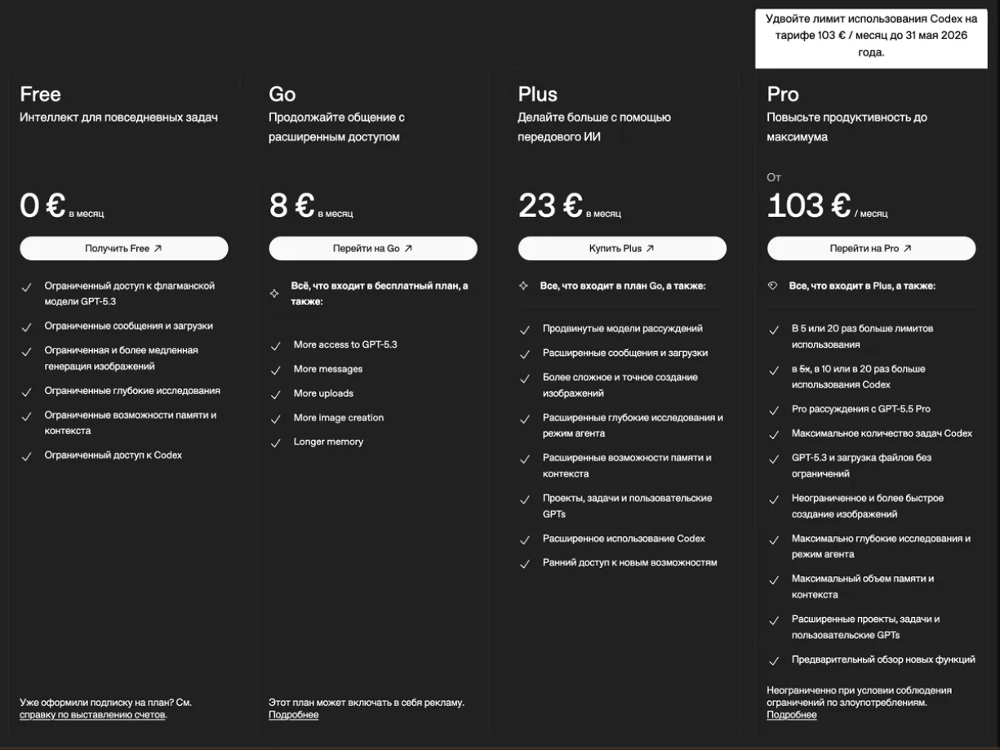
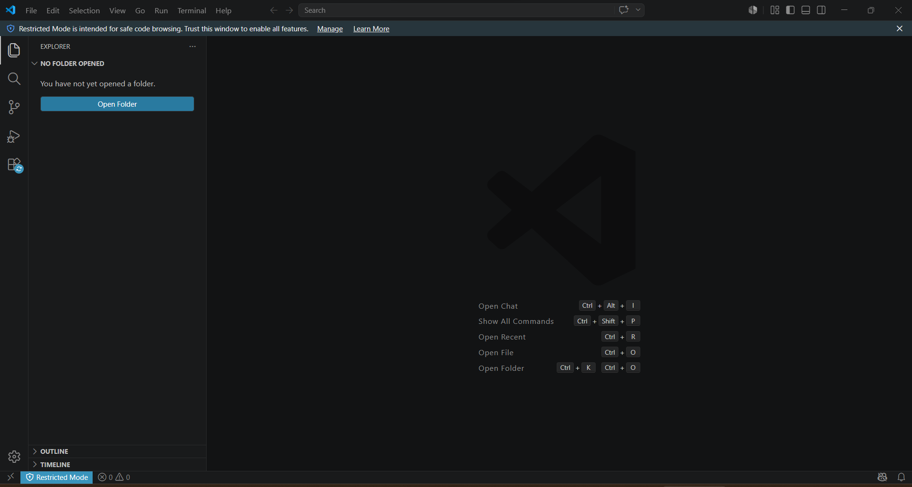
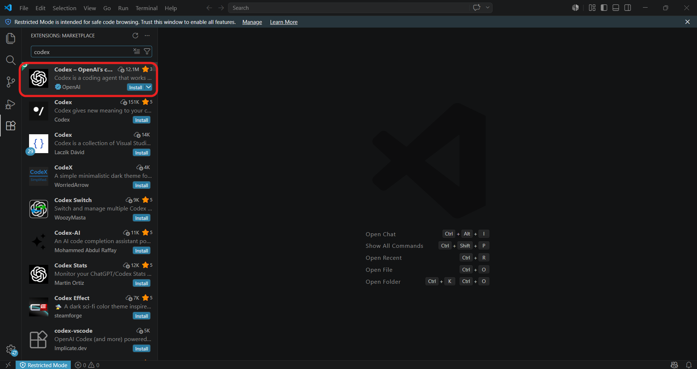
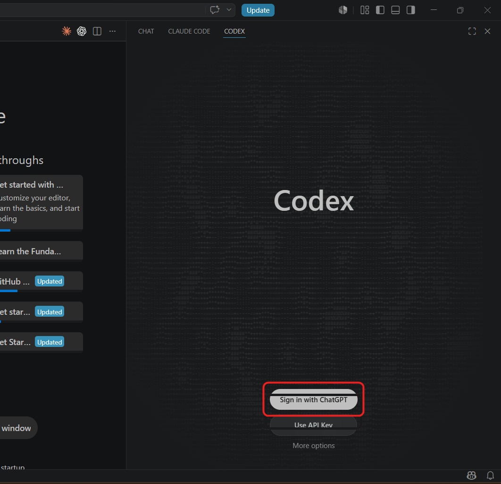
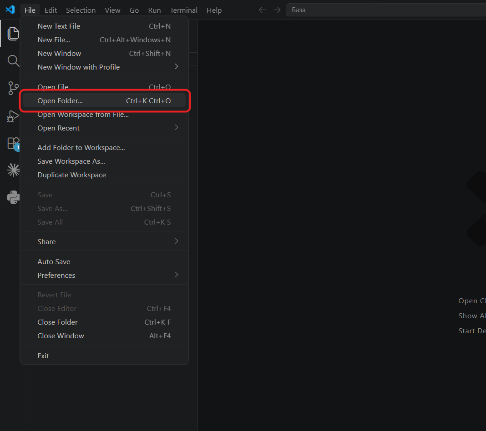
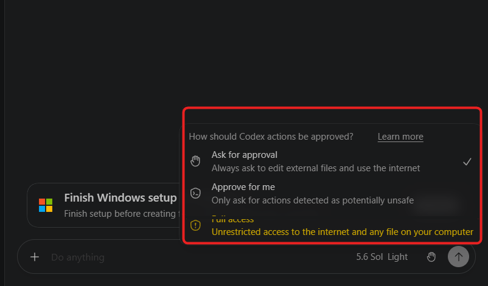
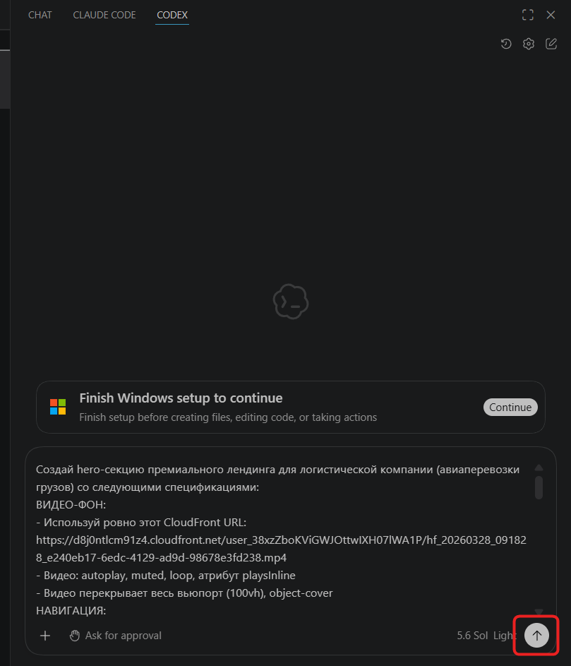
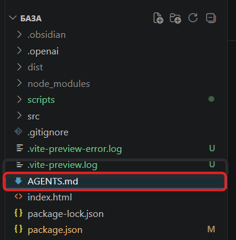

Codex для новичков
Знакомство и настройка Codex с нуля. Короткий путь от «не понимаю, что это» до первого собранного проекта за вечер.

Словил блок от Claude? Или просто хочешь потрогать вторую нейросеть для веб-разработки? Тогда этот гайд для тебя.
Сегодня разберёмся, что такое Codex от ChatGPT и почему он ничем не уступает Claude Code.
Есть одна фраза: ChatGPT советует, Codex работает. Пока не почувствуешь её руками — она будет звучать как маркетинг. Поэтому весь гайд — про то, чтобы ты почувствовал.
Читай, если ты:
- эксперт, фрилансер или специалист, который хочет собирать лендинги, визитки и инструменты своими руками — без разработчиков и дизайнеров;
- предприниматель, который устал ждать неделями, пока подрядчик соберёт простую страницу;
- никогда не писал код, но у тебя куча идей, которые жалко не реализовать;
- пробовал ChatGPT для кода, и каждый раз это заканчивалось «ниче не работает, не понимаю почему».
Программировать ты тут не научишься. Это и не надо. Ты научишься ставить задачи Codex так, чтобы получать готовый рабочий результат. Этого достаточно, чтобы делать вещи, которые раньше требовали программиста, дизайнера и недели работы.
Погнали.
01. Что такое Codex и зачем он тебе
Codex — это ИИ-агент для кода от OpenAI. Слово «агент» тут не для красоты. Оно меняет всё.
Чат-бот — это собеседник. Ты пишешь запрос — он отвечает текстом. Что делать с этим текстом дальше — твоя проблема. Скопировать, вставить куда надо, проверить, исправить, заставить работать — всё руками.
Агент — это исполнитель. Ты ставишь задачу — он сам открывает файлы, пишет код, запускает программы, ловит ошибки, исправляет, проверяет результат и сохраняет. Тебе остаётся посмотреть и принять работу.
Сравни два сценария.
Ты с ChatGPT. Ты преподаёшь английский, хочешь лендинг для частных уроков. Просишь «напиши код для лендинга». ChatGPT даёт код. Создаёшь файл, копируешь, открываешь — кнопки не нажимаются. Возвращаешься, описываешь проблему, получаешь правку. Снова копируешь, снова открываешь. На третий раз получилось. Полтора часа.
Ты с Codex. Говоришь: «Сделай лендинг для частного преподавателя английского. Аудитория — студенты до 30. Цель — записаться на пробный урок через Telegram». Codex создаёт файл, открывает, видит, что кнопки не ведут в Telegram, исправляет, проверяет — работает. Через три минуты: «готово, открывай index.html». Три минуты, две из которых — твои на проверку.
Вся фишка Codex в том, что у него есть доступ к твоим файлам, возможность запускать программы, видеть ошибки и исправлять их в цикле. Этого ChatGPT не умеет.
Где Codex реально мощный
- собрать лендинг, сайт-визитку, инструмент или простое приложение с нуля по описанию;
- сделать страницу под услугу, мероприятие, курс — то, за что разработчику платят от 50 до 300 тысяч рублей;
- доработать существующий проект, даже если ты его не писал и не разбираешься в нём;
- перевести код из одного формата в другой, отрефакторить чужой шаблон;
- написать документацию или инструкцию по запуску для готового проекта;
- проверить твой код на ошибки до того, как ты что-то опубликуешь.
Где Codex слабее, чем кажется
Будем честны — это важно понять до того, как ты разочаруешься на третий день.
- Большие задачи без декомпозиции. «Сделай мне соцсеть» или «целую CRM» — ничего хорошего не выйдет. Codex силён, когда задача влезает в одну сессию: лендинг, визитка, калькулятор, простой инструмент.
- Запутанный чужой код без документации. Проект на 50 файлов без единого объяснения — Codex будет угадывать. Сначала попроси разобраться и описать, потом уже менять.
- Творческие задачи без критериев. «Сделай красиво» — это не задача. Это «угадай, что у меня в голове». Чем точнее опишешь — тем точнее результат.
Держишь это в голове — разочарований не будет.
Как пользоваться Codex
Codex — это не одна программа. Это один агент, доступный в нескольких местах. Подписка одна, лимиты общие, контекст переносится.
- В редакторе кода (VS Code) — расширение прямо в программе, где ты работаешь с файлами. Самый удобный путь для новичка — с него и начнём.
- В терминале (Codex CLI) — для тех, кто дружит с командной строкой. Сюда в этом гайде не идём.
- В облаке (chatgpt.com/codex) — браузерный вариант. Удобен для длинных задач или работы с телефона. Вернёмся к нему в конце.
Идём по самому понятному пути — расширение для VS Code. Остальное освоишь, когда захочешь.
02. Что нужно установить и куда залогиниться
Чтобы Codex заработал, нужны три вещи: аккаунт ChatGPT с подпиской, редактор VS Code и расширение Codex внутри него. По порядку.
Шаг 1. Создай аккаунт ChatGPT
Зайди на chatgpt.com и зарегистрируйся. Понадобится email и зарубежный номер телефона.
Шаг 2. Выбери тариф под свой сценарий
Codex входит в подписку ChatGPT, отдельно его не покупают. Расклад (актуальный на момент этого гайда):
- Free и Go — базовые тарифы, иногда с пробным доступом к Codex. Лимиты маленькие, но потрогать инструмент можно. Хороший вход «пощупать».
- Plus (~$20 / ~23 € в месяц) — рабочий минимум для большинства. Пара лендингов в неделю плюс доработки чужих проектов — хватит. Только начинаешь — бери его не задумываясь.
- Pro (~$100 / ~103 € в месяц) — тариф под Codex, в разы больше лимитов, чем на Plus. Имеет смысл, только если собираешь что-то каждый день и упираешься в потолок.
- Pro максимальный (~$200 в месяц) — для тех, кто гонит код часами без перерыва. Большинству не нужен.
- Business — для команд от двух человек.
Цена показывается в валюте твоего региона (на скрине ниже — евро). Актуальные цифры и лимиты всегда тут: chatgpt.com/pricing

Шаг 3. Поставь VS Code
VS Code — бесплатный редактор кода. Программа, в которой ты будешь работать с файлами проекта. Скачай с code.visualstudio.com, установи, запусти. Уже стоит — пропусти шаг.
Откроешь первый раз — не пугайся. Тёмный экран, странная панель, куча кнопок. Из всего этого тебе нужно буквально 3–4 элемента, сейчас разберём.

03. Codex в VS Code — твой главный инструмент
Самый простой путь: открыл папку → поговорил с Codex прямо в редакторе → увидел, как он создаёт и меняет файлы.
Шаг 1. Поставь расширение Codex
В VS Code слева — вертикальная панель с иконками.
- Нажми иконку Extensions (четыре квадратика).
- В поиске введи Codex.
- Выбери расширение Codex — OpenAI's coding agent от издателя OpenAI. Важно — ставь именно официальное.
- Нажми Install.

Шаг 2. Войди в свой аккаунт ChatGPT
После установки в правой панели появится иконка Codex. Нажми на неё. В окне — кнопка Sign in with ChatGPT. Откроется браузер — авторизуйся, разреши доступ.
Панель Codex активируется. Лимиты подтянутся из твоего ChatGPT-плана сами — никаких ключей вводить не надо.

Шаг 3. Открой папку для проекта
Codex работает с папкой на твоём компьютере. Это может быть пустая папка (создаст новый проект) или папка с готовыми файлами (будет дорабатывать).
Создай новую папку (например, на рабочем столе, назови my-first-landing) и открой её в VS Code через File → Open Folder.

Шаг 4. Не пугайся режимов
Под полем ввода в панели Codex — переключатель режимов: как Codex согласовывает свои действия. Выглядит сложно, но запомни просто.
1. Ask for approval (спрашивать одобрение) — Codex всегда спрашивает разрешение, прежде чем менять внешние файлы или лезть в интернет. Самый безопасный режим. По сути: «ничего не делает без тебя». Стоит по умолчанию — с него и начинай.
2. Approve for me (одобряй за меня) — Codex сам выполняет действия, а спрашивает только то, что счёл потенциально небезопасным. Меньше кликов, баланс скорости и безопасности. Для обычной работы, когда освоишься.
3. Full access (полный доступ) — неограниченный доступ к интернету и любым файлам, без вопросов. Не лезь сюда, пока не освоишься.

Шаг 5. Поставь первую задачу
Начнём с простого — соберём лендинг для компании грузовых авиаперевозок. В поле Codex напиши:
Создай одностраничный лендинг для компании грузовых авиаперевозок. Аудитория — предприниматели и менеджеры по логистике, которым нужно быстро и надёжно доставить груз за рубеж. Нужно (сверху вниз): — первый экран: заголовок «Быстро. Надёжно.», подзаголовок про доставку грузов по всему миру, кнопка «Получить консультацию» — блок «О компании» — 3-4 предложения о подходе: сроки, сохранность груза, поддержка на каждом этапе — блок «3 преимущества» — доставка от документов до негабарита, таможенное сопровождение, личный менеджер — блок «Для кого» — три типа клиентов: «интернет-магазин с зарубежными поставками», «производитель, отправляющий оборудование», «разовый крупный груз» — блок «Отзывы» — 3 карточки с придуманными именами и короткими отзывами — блок «О компании» — фото-заглушка, название, опыт, направления — форма заявки: имя, email, телефон — футер с контактами Стиль: строгий, надёжный, современный. Главный цвет — графитово-серый с оранжевым акцентом. Шрифт без засечек, крупный. Адаптив под мобильные обязательно. Используй HTML, CSS и немного JavaScript. Один файл index.html, всё внутри.
Модель бери помощнее. Жми отправить. Codex покажет план, начнёт создавать файлы, попросит подтверждения на каждом шаге. Жми Approve (одобрить).

Через пару минут в папке появится index.html. Открой его двойным кликом из папки — проект откроется в браузере.
Что ты заметишь после первой задачи
- Первое: ИИ не «помог сделать», а сделал. Между «дал код, который ты сам вставлял» и «открыл файл, написал, проверил, исправил» — пропасть.
- Второе: ты сэкономил реальные деньги. У разработчика этот лендинг стоил бы 50–150 тысяч. У фрилансера — от 30 тысяч. Тебе он обошёлся в 20 минут и подписку.
- Третье: повторяешь это для любой ниши. Замени «грузоперевозки» на «школу английского», «студию йоги», «курс по рисованию» — структура промпта та же.
Три ошибки, которые ты сделаешь в первый день
Это нормально, через них проходят все. Но проходишь быстрее, если знаешь заранее.
Ошибка 1: пишешь слишком расплывчато. «Сделай красивый сайт» — Codex выдаст что-то среднее, будешь править два часа. Опиши конкретно: блоки, тексты, стиль, цвета. Полминуты на формулировку экономят час правок.
Ошибка 2: не делаешь резервную копию. Codex меняет файлы на твоём компьютере. Не подойдёт результат — без копии вернуть версию сложно. Перед большой задачей скопируй папку проекта рядом, добавь в название _backup_v1. Позже освоишь Git. Пока хватит копии папки.
Ошибка 3: открываешь новый чат, когда что-то пошло не так. Не надо. Codex помнит весь разговор внутри одного чата. Просто напиши: «Заголовок ок, описание сократи вдвое». Он поправит. (Если контекст совсем раздулся — тогда да, новый чат имеет смысл.)
Что делать, если что-то пошло не так
- Codex просит подтверждение на каждый чих. Нормально для режима Ask for approval. Задача рутинная и ты уверен — жми Approve all. Full access в первую неделю не включай.
- Сайт собрался, но выглядит криво. Не начинай заново: «Шрифт мелкий, увеличь в 1.5 раза. Галерея в один столбец на мобильных — сделай в два».
- Codex не может найти файл. Скорее всего, забыл открыть папку (File → Open Folder). Открой — попробуй снова.
- Codex говорит «нет доступа к интернету». Значит, ему нужна библиотека или внешний сервис. Понимаешь зачем — разреши. Не понимаешь — спроси прямо в чате: «Зачем тебе доступ?».
Глобально: любая ошибка — просто спроси у Codex, что это и как исправить. Он поможет.
04. AGENTS.md — инструкция для Codex
Самая недооценённая глава. Пропустишь только её — дальше можешь не читать. AGENTS.md превращает Codex из «умного помощника» в реально полезного агента, который понимает твой стиль и привычки.
Что меняется, когда у Codex есть AGENTS.md
Без AGENTS.md ты просишь что-то — он делает, но отвечает по-английски. Просишь по-русски — переходит. На следующей задаче снова по-английски. Называет файлы как удобно ему, тащит библиотеки, о которых ты не просил, делает текст «продающим», хотя ты просил спокойный. Каждый раз объясняешь одни правила заново.
С AGENTS.md ты прописываешь правила один раз. Codex читает их в начале каждой сессии и сразу работает по ним. Думай об этом как о памятке для новичка на работе: объяснил правила один раз — дальше он им следует без напоминаний.
Где живёт AGENTS.md
- Глобальный — в папке
~/.codex/на твоём компьютере. Правила применяются ко всем проектам. - Локальный — в папке конкретного проекта. Работает только для него.
- Есть оба — сначала читаются глобальные, потом локальные дополняют или перекрывают.

Глобальный AGENTS.md — настрой один раз и забудь
Самое полезное для новичка. Попроси Codex:
Добавь глобальный AGENTS.md со следующими правилами: # Глобальные правила работы ## Стиль ответов — Отвечай мне по-русски, в коде комментарии тоже на русском — Имена файлов и переменных — на английском, маленькими буквами — Если задача неясна — задай мне 1-2 уточняющих вопроса, не выдумывай — Не извиняйся, не благодари — просто работай ## Безопасность — Не удаляй мои файлы без явного подтверждения — Не устанавливай новые библиотеки и программы без объяснения, зачем они — Не лезь в системные настройки моего компьютера ## В конце задачи — Кратко напиши, что ты сделал и какие файлы поменял — Если есть сомнения в решении — скажи об этом, не делай вид, что всё идеально — Если что-то не получилось — честно признайся, не выкручивайся
Сохрани файл. Всё. Теперь Codex в любом проекте работает по этим правилам, без напоминаний.
Локальный AGENTS.md — для конкретного проекта
Появился проект со своими особенностями — добавь AGENTS.md в корень его папки. Два примера.
Лендинг твоей услуги:
# AGENTS.md — лендинг моей услуги ## Что это за проект Одностраничный лендинг для записи на пробный урок английского. Аудитория — студенты до 30 лет. ## Команды — Чтобы открыть страницу — двойной клик по index.html в папке — Никаких npm, python и других программ запускать не надо ## Стиль — Главный цвет — глубокий синий (#1e3a8a), акцент — мягкий оранжевый (#fb923c) — Шрифт без засечек, лёгкий, с хорошим воздухом между строк — Адаптив под мобильные обязателен во всех правках — Тон текстов — дружеский, на «ты», без давления и продающих штампов ## Что не трогать — Тексты в блоке «Обо мне» — я писал их сам, не переписывай — Не убирай блок с ценами, я его специально оставил видимым — Все CTA-кнопки ведут только в Telegram (@my_username), не делай форму на сайте
Калькулятор стоимости услуг:
# AGENTS.md — калькулятор стоимости ## Что это за проект Простой калькулятор для моих клиентов: пользователь выбирает параметры — получает примерную стоимость моей работы. ## Стиль — Минималистичный дизайн, белый фон, спокойные тёмные шрифты — Одна кнопка действия, никаких лишних элементов — Большие удобные поля, чтобы клиенту было приятно тыкать с телефона ## Логика — Все расчёты выполняются прямо в браузере, на JavaScript — Никаких внешних API не подключай — только встроенные средства — Цены и параметры храни в отдельном объекте в начале файла, чтобы я мог их легко менять
Файл маленький, но Codex теперь точно знает: что делать, что не делать, какой стиль, что не трогать.
Чего в AGENTS.md быть НЕ должно
- длинных манифестов в стиле «следуй лучшим практикам»;
- паролей, ключей API, секретных данных (файл может попасть в публичные места);
- размытых формулировок без конкретики.
Хороший AGENTS.md помещается в один экран. Меньше — лучше: Codex читает его каждый раз, и большой файл съедает место, которое могло пойти на полезную работу.
05. Как ставить задачи, чтобы Codex не тупил
Качество результата на 80% зависит от того, как ты сформулировал запрос. Полминуты на нормальную формулировку экономят час правок.
Формула хорошей задачи
Четыре элемента — каждый необязательный, но каждый усиливает результат.
- Что собрать — конкретно, что должно получиться. Не «сделай сайт», а «сайт-визитка для частного психолога из Москвы, работающего онлайн».
- Структура и содержимое — какие блоки, что в них, какие тексты.
- Стиль и ограничения — как выглядит, какие технологии. Не «красиво», а «спокойный, светлый, акцент — мятный, без анимаций. HTML и CSS в одном файле».
- Критерий готовности — как поймёшь, что работает. «После сборки открой файл и проверь, что кнопка Записаться работает на мобильном».
Плохой запрос vs. хороший
Плохо:
Сделай мне сайт-визитку.
Что произойдёт: Codex выдаст что-то максимально среднее — белый фон, синяя кнопка, текст-заглушка про «современные услуги». Ничего общего с тем, что у тебя в голове. Час на правки.
Хорошо:
Собери одностраничный сайт-визитку для меня — я частный психолог, работаю онлайн по всей России. Структура (сверху вниз): — шапка: моё имя «Анна Соколова», подзаголовок «психолог, работаю в КПТ-подходе» — блок «Подход» — три предложения: работаю в когнитивно-поведенческой терапии, специализируюсь на тревоге и выгорании, без эзотерики и духовных практик — блок «С чем я работаю» — список из 5 запросов клиентов, каждый одной строкой — блок «Как проходит работа» — три шага: первая встреча, регулярные сессии, оценка результата — блок «О себе» — фото-заглушка, образование, опыт работы, подход — блок «Стоимость» — цена сессии, формат оплаты — контакты: Telegram, email, кнопка «Записаться» ведёт в Telegram Стиль: спокойный, светлый, без давления и продающих штампов. Главный цвет — приглушённый мятный. Шрифт лёгкий, с воздухом между строк. Адаптив под мобильные обязательно. Один файл index.html, стили внутри. Без сторонних библиотек. Когда соберёшь — открой index.html в браузере и проверь, что кнопка «Записаться» работает на мобильном размере.
Что произойдёт: Codex получит конкретику и выдаст готовый сайт сразу. Что-то не так — поправишь одной фразой. Второй запрос пишется за 3–4 минуты, а избавляет от часа правок.
Три правила, которые сэкономят часы
Правило 1: резервная копия до задачи. Скопируй папку рядом — это твоя страховка. Пять секунд делается, час боли спасает.
Правило 2: не начинай заново — уточняй. Результат не идеальный — не открывай новый чат. «Заголовок ок, а описание сократи вдвое». Codex держит весь контекст.
Правило 3: заставляй Codex проверять себя. В конце задачи добавляй: «открой собранный файл и убедись, что нет ошибок». Codex умеет самопроверку — но только если попросишь.
Покажи пример, если словами трудно
Иногда стиль проще показать, чем описать. Дай Codex ссылку на референс или скриншот:
Хочу лендинг в стиле, как на этом сайте: [ссылка]. Меня цепляет: — чёрно-белая палитра с одним акцентным цветом — крупная типографика на первом экране — много воздуха между блоками Сделай для меня лендинг моей онлайн-школы английского в этом стиле. Содержание возьми отсюда: [перечисли блоки и тексты].
06. Что собрать прямо сейчас — практика
Теорию изучишь потом. Лучший способ освоить Codex — собрать что-то реальное за вечер. Ниже восемь готовых сценариев. Все делаются за 1–3 часа с чистого листа. Бери любой, копируй промпт, итерируй.
Для работы и фриланса
1. Лендинг для своей услуги или курса
Ты — опытный веб-дизайнер. Сделай одностраничный лендинг для [твоя услуга или курс — например, «онлайн-курса по графическому дизайну для начинающих»]. Аудитория — [кто твои клиенты: возраст, потребности, что они ищут]. Структура: — первый экран: заголовок с ценностным предложением, подзаголовок, кнопка «записаться» — блок «о курсе» или «о подходе» — 3-4 предложения — блок «3 преимущества» — что отличает тебя от других — блок «для кого» — три типа клиентов с короткими описаниями — блок «отзывы» — 3 карточки с придуманными именами — форма записи: имя, телефон, мессенджер для связи — футер с контактами Стиль: [лёгкий и вдохновляющий / строгий и экспертный / тёплый и уютный — выбери]. Цвета: [укажи 2-3]. Адаптив под мобильные обязателен. Один файл index.html, стили внутри. После сборки — открой и проверь, что всё нормально читается на мобильном размере.
2. Сайт-визитка эксперта
Собери одностраничный сайт-визитку для меня. Я — [твоя профессия: коуч / репетитор / психолог / маркетолог-консультант / преподаватель]. Главная цель страницы — чтобы клиент написал мне в Telegram и записался на консультацию. Структура: — шапка: моё имя, специализация в одном предложении — блок «обо мне» — 3-4 предложения: образование, опыт, подход — блок «с чем я работаю» — список из 5-7 типичных запросов клиентов — блок «как мы работаем» — 3 шага от первого контакта до результата — блок «отзывы» — 3 карточки — блок «стоимость» — формат и цена — контакты: все CTA-кнопки ведут в Telegram Стиль: [спокойный / энергичный / экспертный — выбери]. Главный цвет — [укажи]. Шрифт лёгкий, с воздухом. Адаптив обязательно. Один файл index.html, всё внутри.
3. Калькулятор стоимости услуг
Собери калькулятор стоимости услуг для [твоя профессия — например, «дизайнера интерьеров» или «копирайтера»]. Логика: — пользователь выбирает тип услуги (3-4 варианта на твоё усмотрение, предложи типовые для моей сферы) — выбирает объём работ (например, размер помещения или количество знаков) — отмечает галочкой дополнительные опции (срочность, выезд, ещё что-то типичное) — нажимает «рассчитать» — видит итоговую стоимость крупным шрифтом — под результатом — кнопка «обсудить проект», ведёт в Telegram Цены на параметры храни в отдельном объекте в начале файла, чтобы я их мог потом легко менять. Стиль: чистый, профессиональный, с минимумом отвлекающих элементов. Цвет акцента — [укажи]. Один файл index.html, всё внутри. Проверь, что калькулятор работает на разных вариантах выбора.
4. Форма-бриф для клиентов
Собери форму-бриф, которую я буду отправлять клиентам перед началом работы. Я — [твоя профессия]. В форме нужны вопросы: — [перечисли 5-8 ключевых вопросов, которые ты сейчас задаёшь клиентам устно. Например, для дизайнера интерьеров: тип помещения, площадь, бюджет, стиль, сроки, есть ли дети/животные, контакты] К каждому полю добавь короткую подсказку, чтобы клиент понимал, что писать. После заполнения — кнопка «отправить». Все данные собираются в один блок текста, который клиент копирует и отправляет мне в Telegram. Дизайн: аккуратный, профессиональный, без лишнего. Цвет — [укажи]. Адаптив обязательно. Один файл index.html, всё внутри.
Для бизнеса и заработка
5. Страница для сбора заявок на бесплатное мероприятие
Собери одностраничный сайт для сбора заявок на бесплатный вебинар [тема — например, «Как начать инвестировать с 10000 рублей»]. Аудитория — [кто, возраст, чего они ищут]. Структура: — первый экран: заголовок с темой и датой/временем, кнопка «записаться» — блок «что узнаете» — 3-4 пункта: что конкретно человек получит за час — блок «о спикере» — фото-заглушка, имя, регалии (3-4 строки) — форма записи: имя, email — блок «после вебинара получите» — 1-2 бонуса (запись, чек-лист) — подпись: «количество мест ограничено», без агрессии Стиль: [строгий и серьёзный / лёгкий и дружелюбный — выбери]. Цвет акцента — [укажи]. Адаптив обязателен. Один файл index.html.
6. Простой трекер заявок (мини-CRM)
Собери простой трекер заявок для моего малого бизнеса. Это будет браузерное приложение, я открываю его на своем компьютере раз в день. Что должно быть: — форма для добавления нового клиента: имя, телефон, источник (откуда узнал), статус (новый / в работе / закрыт), комментарий — список добавленных клиентов снизу — карточками — возможность изменить статус клиента кликом — фильтр по статусу: показать всех / только новых / только в работе — наверху статистика: «Всего: 23 / В работе: 8 / Закрыто за месяц: 12» — возможность удалить запись (со страховочным «уверены?») Все данные сохраняются в браузере (localStorage), чтобы не пропадали при перезагрузке. Стиль: чистый, деловой, без лишних украшений. Главный цвет — [укажи спокойный]. Один файл index.html, всё внутри.
Для жизни — собрать что-то полезное под себя
7. Личный планер недели
Собери личный планер недели — браузерное приложение под мои привычки. Что нужно: — страница разделена на 7 колонок (понедельник-воскресенье) — в каждой колонке — поле для добавления задач — у задачи есть галочка «выполнено» (зачёркивает текст) — наверху — счётчик «выполнено за неделю: 5 из 12» — кнопка «начать новую неделю» (с подтверждением) очищает все задачи — все задачи сохраняются в браузере, не пропадают при перезагрузке Стиль: спокойный, минималистичный, без перегруза. Шрифт без засечек, мягкая палитра — пастельные цвета, акцент — [укажи]. Адаптив под мобильные. Один файл index.html.
8. Доработка чужого шаблона
Очень частый сценарий: есть готовый шаблон из интернета или код от прошлого фрилансера, надо подправить под себя. Codex отлично с этим справляется.
Я открыл проект — это [сайт / лендинг / приложение], скачанный с интернета (или сделанный кем-то для меня). Сначала изучи его структуру: пройдись по файлам и кратко расскажи мне: — что этот проект вообще делает — из каких частей он состоит — как его запустить (если нужно что-то запускать) — есть ли очевидные проблемы или странные места После этого я скажу, что нужно поменять. Пока ничего не правь.
Codex прочитает проект, разберётся и даст внятную карту, прежде чем что-то менять. Это золотой паттерн — особенно когда заходишь в чужой код и не понимаешь, с чего начать. Потом смело давай правки: «замени все упоминания Москвы на Санкт-Петербург», «убери блок отзывов, добавь FAQ».
Где ещё пригодится Codex
- Тексты и копирайтинг. «Напиши тексты для всех блоков лендинга. Тон — спокойный, на "ты", без ИИшных приколов типа "в современном мире"».
- Документация и инструкции. «Сделай инструкцию для клиента: как пользоваться, что делать, если не работает».
- Объяснить непонятный код. «Объясни на пальцах, что делает этот файл и почему так».
- Скрипт под рутину. «Файл с 200 контактами в формате имя; телефон; email. Напиши скрипт, который превратит это в таблицу».
- Перевод между форматами. «Лендинг на чистом HTML — переделай в формат для Tilda».
- A/B-варианты. «Сделай два варианта первого экрана — один эмоциональный, второй рациональный».
07. Куда расти дальше
Когда база в VS Code станет привычной — у Codex есть ещё пара режимов. Прямо сейчас не нужны, но знать полезно.
Codex в облаке (chatgpt.com/codex). Браузерный режим. Подключаешь проекты на GitHub (сервис для хранения кода, бесплатный), ставишь задачу — Codex работает в облачной песочнице и присылает результат. Удобнее VS Code, когда: задача длинная (10+ минут) и не хочешь смотреть; надо поставить задачу с телефона; хочешь запустить 3–4 задачи параллельно в фоне.
Codex CLI — для терминала. Решишь освоить командную строку — есть CLI-версия. Установка — одна команда:
npm install -g @openai/codex
Потом запускаешь codex в любой папке проекта, авторизуешься через ChatGPT — работаешь. Лимиты те же.
Знаки, что пора расти: собрал 3–5 проектов и делаешь их уверенно за 30–60 минут; надоел один index.html-файл, хочешь раскладывать проекты по папкам; тянет к базам данных, отправке писем, реальным платежам и чтобы сайт был «в интернете», а не только у тебя на компе.
Что ты теперь умеешь
Дочитал и сделал хотя бы первую задачу — ты уже впереди тех, кто до сих пор скептически смотрит на ИИ. Потому что можешь:
- установить Codex в VS Code и подключить к своему ChatGPT-аккаунту;
- поставить задачу так, чтобы получить рабочий результат с первой попытки;
- настроить AGENTS.md один раз и забыть про повторные объяснения;
- не бояться потерять наработки — делаешь бэкапы;
- понимать, какие задачи давать Codex, а какие оставить специалисту;
- иметь набор готовых промптов под лендинги, визитки, калькуляторы и формы — на месяц практики.
Этого хватит, чтобы за вечер собирать рабочие проекты, которые раньше требовали разработчика и недели работы.
Что дальше
Codex — это инструмент. Как любой инструмент, он мощнее, когда пользуешься им системно: правильный AGENTS.md, продуманные задачи, накопленный опыт. Один и тот же Codex у новичка и у опытного выдаёт принципиально разный результат.
Сегодня — база. Дальше всё решает практика: чем больше проектов соберёшь, тем быстрее и увереннее будешь это делать. Не пытайся запомнить всё сразу — открой главу 06, возьми один сценарий и собери его сегодня вечером.
 Собрал первый проект — считай, ты уже вкатился. Погнали дальше.
Собрал первый проект — считай, ты уже вкатился. Погнали дальше.